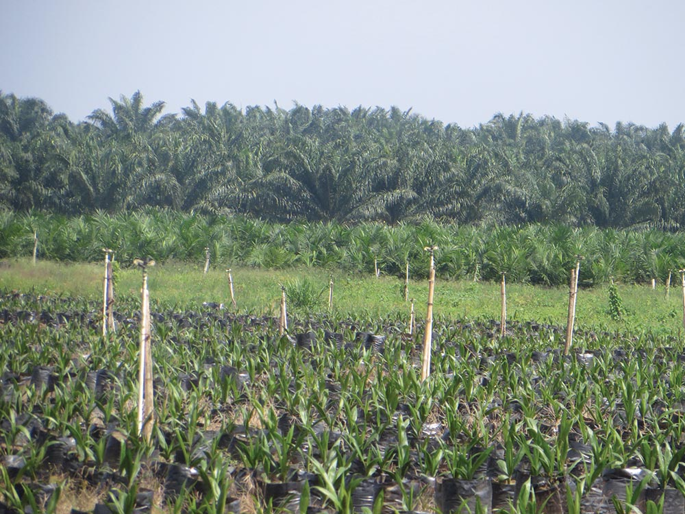

Monitoring Outcomes
Financial Intermediaries
Investments in financial intermediaries (FIs) comprise 53 percent of IFC’s long-term commitments, according to IFC’s 2017 Annual Report. As highlighted in CAO’s FI monitoring report this year, these investments expose IFC to potentially significant environmental and social risks in sub-projects financed through IFC-supported banks and investment funds.
FI-related complaints to CAO have increased in recent years. CAO is conducting investigations related to two hydropower plants in Guatemala financed by IFC-supported investment funds, and monitoring investigations of two IFC FI investments in Honduras and India, respectively. Other cases in dispute resolution relate to agribusiness projects funded through IFC FIs. CAO is also assessing a new complaint from Guinea regarding a gold mining project connected to an IFC client bank.
Monitoring report: Since 2013, CAO has been monitoring IFC actions to address CAO’s sectoral audit of IFC FI investments. CAO released a monitoring report in March 2017, based on a sample of 38 active FI investments committed since 2012. The report confirms that IFC has improved the quality and intensity of its review and supervision of FI investments since 2013. However, the report emphasizes that IFC does not, in general, have a basis to assess FI clients’ compliance with its environmental and social requirements. This is of particular concern in relation to FI clients that are supporting projects with higher risks, and for projects in which IFC does not have assurance that its standards are being implemented. IFC has piloted several tools to enhance environmental and social due diligence and supervision of FI clients. CAO welcomes these pilots and notes opportunities for IFC to adopt them more widely with other FI clients exposed to higher risk activities.
Need for better disclosure: While progress has been made in IFC’s disclosure of projects financed by private equity funds, there is no requirement for disclosure of sub-project information in most of IFC’s FI portfolio. FIs that voluntarily subscribe to the Equator Principles have disclosed over 900 sub-projects since 2014. CAO welcomes IFC’s recent commitment to encourage its FI clients to disclose sub-projects. Disclosure of information is an important element to ensure that people affected by FI business activities have ready access to grievance mechanisms.
Monitoring IFC Palm oil investment in Honduras
CAO continues to monitor IFC’s actions to address its 2014 audit findings related to IFC investments in Dinant in Honduras. The case was triggered by concerns of violent land conflict in and around Dinant palm oil plantations. CAO issued a monitoring report this year and conducted a monitoring visit to Honduras, meeting with representatives of the government, the IFC client (Corporación Dinant), and communities. In June 2017, CAO incorporated two additional complaints from communities regarding the project into the ongoing monitoring process.

IFC Power Plant Investment in India
In February 2017, CAO released a monitoring report in relation to its 2013 audit of IFC’s investment in Coastal Gujarat Power Limited (CGPL) for a 4,000MW “ultra-mega” power plant in Mundra, in the state of Gujarat, India. The monitoring report emphasizes an outstanding need for a rapid, participatory, and remedial approach to assessing and addressing project impacts raised by the complainants. CAO continues to monitor IFC’s response to the audit.
Investigations Closed After Monitoring
Peru | In March 2017, CAO released a second compliance monitoring report regarding IFC’s investment in Quellaveco, a large-scale copper mining concession located in Peru. CAO’s report concluded that, overall, IFC’s response had not substantially addressed CAO’s 2014 investigation ndings, but closed the case considering the time passed since IFC’s divestment from the project, and IFC’s decision not to engage in a project-level response.
Colombia | In May 2017, CAO released a monitoring report regarding IFC’s investment in Avianca airlines in Colombia. Overall, CAO found that IFC’s response to its 2015 compliance investigation had only partially addressed the compliance findings. CAO closed the case considering the time that had passed since the client’s repayment of the IFC loan, and IFC’s decision not to engage in a project-level response.
Systemic findings from CAO’s investigation, which featured labor and working conditions as central issues, will be addressed through CAO’s ongoing compliance and advisory work.